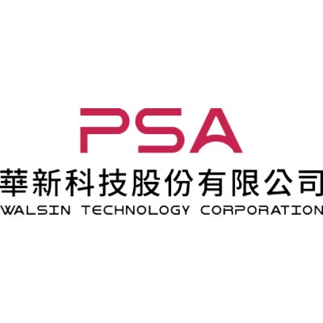
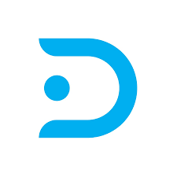

Hi, I am
蔡俊榮 (Rowan)
熱衷於解決複雜的後端難題，專注於建構高效率、高可用的系統架構。
擁有紮實的 C#、Java 與 Python 開發經驗，從自動化工具到企業級應用皆能得心應手。
我不只寫程式，更致力於用技術為企業創造價值。
職涯經歷

CIM 工程師 (後端開發與系統整合)
華新科技 (Walsin Technology)
- MES 功能優化與開發：這一年主要負責既有 MES 功能優化，並持續開發新功能模組，確保產線資訊流高可用性。
- PLC 機台監控：串接產線 PLC 設備，即時掌握機台運作狀態與關鍵製程參數。
- 環境溫溼度監控：建置各站點溫溼度監控機制，確保生產環境條件符合製程要求。
- 監控資訊整合：將監控資訊串接至 SingleR 內部網頁，方便各單位人員即時查看設備狀態。
- 異常告警通知：建立機台異常 LINE 即時通知機制，加快現場人員應變速度。
- 廠區即時監控圖：開發廠區即時監控圖，視覺化呈現各產線與設備運作狀態。
MES 工程師 (C# 後端開發)
先進光電 (AOET)
- 系統客製化：使用 C# 設計後端邏輯與操作介面，優化作業流程。
- 自動化排程：利用 WinForms 與批次腳本建立報表自動寄送機制。
- 流程自動化 (RPA)：維護 UiPath 流程，大幅減少人工重複操作。
- 資料處理：撰寫 Python 爬蟲與 Excel VBA，提升資料整合效率。

軟體工程師 (Java Web 開發)
鼎新數智 (Digiwin)
- Web 全端開發：使用 Java Web, HTML, TypeScript 維護企業級系統。
- 資料視覺化：使用 FineReport 整合 Oracle DB 開發商業報表。
- 系統整合：協助 ETL 資料交換與 DevOps (Jenkins/SVN) 版控管理。
精選專案
即時監控系統開發
透過 Modbus/TCP 協定與硬體設備通訊。實現高頻率自動輪詢 (Polling) 機制，即時掌握設備狀態與異常警報，確保系統穩定運行。
AutoBackup 自動化工具
開發 Windows Service 工具，自動偵測關鍵資料夾變動並進行壓縮備份。包含完整 Log 記錄與排程設定，大幅降低人工備份的時間成本。
自動化報表系統
整合 WinForms 與 Python 腳本，每日自動抓取數據並產出視覺化報表。將繁瑣的資料整理工作自動化，並自動寄送給相關部門。
專業技能 & 學歷
後端與系統開發
C# (.NET)Java (Spring)PythonWinFormsRESTful API
資料庫與工具
Oracle SQLSQL ServerRedisGit / SVNJenkins
領域知識
MES 系統PLC (Modbus)RPAETL
AI 協作開發
AI Coding (Claude Code)Prompt EngineeringAI 輔助除錯與重構
學歷
國立高雄科技大學
資訊管理系 (2014 - 2018)